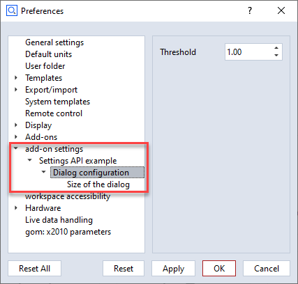

ZEISS INSPECT App Python API documentation
Welcome to the ZEISS INSPECT Python API documentation. Here you can find a detailed documentation of a subset of the App programming specification. Please bear in mind, that recording commands with the script editor can be used to add new functions to your script.
Note
The module importing behavior changed with ZEISS INSPECT 2025. Previously, the API modules could be used without proper import statements due to their internal handling. Beginning with ZEISS INSPECT 2025, each module is a full featured native Python module and
must be properly imported before use!
gom.api.addons
API for accessing the add-ons currently installed in the running software instance
This API enables access to the installed add-ons. Information about these add-ons can be queried, add-on files and resources can be read and if the calling instance is a member of one specific add-on, this specific add-on can be modified on-the-fly and during software update processes.
gom.api.addons.AddOn
Class representing a single add-on
This class represents a single add-on. Properties of that add-on can be queried from here.
gom.api.addons.AddOn.exists
- gom.api.addons.AddOn.exists(path: str): bool
Check if the given file or directory exists in an add-on
- API version:
1
- Parameters:
path (str) – File path as retrieved by ‘gom.api.addons.AddOn.get_file_list ()’
- Returns:
‘true’ if a file or directory with that name exists in the add-on
- Return type:
bool
This function checks if the given file exists in the add-on
gom.api.addons.AddOn.get_content_list
- gom.api.addons.AddOn.get_content_list(): list
Return the list of contents contained in the add-on
- API version:
1
- Returns:
List of contents in that add-on (full path)
- Return type:
list
gom.api.addons.AddOn.get_file
- gom.api.addons.AddOn.get_file(): str
Return the installed add-on file
- API version:
1
- Returns:
Add-on file path (path to the add-ons installed ZIP file) or add-on edit directory if the add-on is currently in edit mode.
- Return type:
str
This function returns the installed ZIP file representing the add-on. The file might be empty if the add-on has never been ‘completed’. If the add-on is currently in edit mode, instead the edit directory containing the unpacked add-on sources is returned. In any way, this function returns the location the application uses, too, to access add-on content.
gom.api.addons.AddOn.get_file_list
- gom.api.addons.AddOn.get_file_list(): list
Return the list of files contained in the add-on
- API version:
1
- Returns:
List of files in that add-on (full path)
- Return type:
list
This function returns the list of files and directories in an add-on. These path names can be used to read or write/modify add-on content.
Please note that the list of files can only be obtained for add-ons which are currently not
in edit mode ! An add-on in edit mode is unzipped and the get_file () function will return
the file system path to its directory in that case. That directory can then be browsed with
the standard file tools instead.
Example
for addon in gom.api.addons.get_installed_addons():
# Edited add-ons are file system based and must be accessed via file system functions
if addon.is_edited():
for root, dirs, files in os.walk(addon.get_file ()):
for file in files:
print(os.path.join(root, file))
# Finished add-ons can be accessed via this function
else:
for file in addon.get_file_list():
print (file)
gom.api.addons.AddOn.get_id
- gom.api.addons.AddOn.get_id(): UUID
Return the unique id (uuid) of this add-on
- API version:
1
- Returns:
Add-on uuid
- Return type:
UUID
This function returns the uuid associated with this add-on. The id can be used to uniquely address the add-on.
gom.api.addons.AddOn.get_level
- gom.api.addons.AddOn.get_level(): str
Return the level (system/shared/user) of the add-on
- API version:
1
- Returns:
Level of the add-on
- Return type:
str
This function returns the ‘configuration level’ of the add-on. This can be
‘system’ for pre installed add-on which are distributed together with the application
‘shared’ for add-ons in the public or shared folder configured in the application’s preferences or
‘user’ for user level add-ons installed for the current user only.
gom.api.addons.AddOn.get_name
- gom.api.addons.AddOn.get_name(): str
Return the displayable name of the add-on
- API version:
1
- Returns:
Add-on name
- Return type:
str
This function returns the displayable name of the add-on. This is the human readable name which is displayed in the add-on manager and the add-on store.
gom.api.addons.AddOn.get_script_list
- gom.api.addons.AddOn.get_script_list(): list
Return the list of scripts contained in the add-on
- API version:
1
- Returns:
List of scripts in that add-on (full path)
- Return type:
list
gom.api.addons.AddOn.has_license
- gom.api.addons.AddOn.has_license(): bool
Return if the necessary licenses to use this add-on are present
- API version:
1
This function returns if the necessary licenses to use the add-on are currently present. Add-ons can either be free and commercial. Commercial add-ons require the presence of a matching license via a license dongle or a license server.
gom.api.addons.AddOn.is_edited
- gom.api.addons.AddOn.is_edited(): bool
Return if the add-on is currently edited
- API version:
1
- Returns:
‘true’ if the add-on is currently in edit mode
- Return type:
bool
Usually, an add-on is simply a ZIP file which is included into the applications file system. When an add-on is in edit mode, it will be temporarily unzipped and is then present on disk in a directory.
gom.api.addons.AddOn.is_protected
- gom.api.addons.AddOn.is_protected(): bool
Return if the add-on is protected
- API version:
1
- Returns:
Add-on protection state
- Return type:
bool
The content of a protected add-on is encrypted. It can be listed, but not read. Protection includes both ‘IP protection’ (content cannot be read) and ‘copy protection’ (content cannot be copied, as far as possible)
gom.api.addons.AddOn.read
- gom.api.addons.AddOn.read(path: str): bytes
Read file from add-on
- API version:
1
- Parameters:
path (str) – File path as retrieved by ‘gom.api.addons.AddOn.get_file_list ()’
- Returns:
Content of that file as a byte array
- Return type:
bytes
This function reads the content of a file from the add-on. If the add-on is protected, the file can still be read but will be AES encrypted.
Example: Print all add-on ‘metainfo.json’ files
import gom
import json
for a in gom.api.addons.get_installed_addons ():
text = json.loads (a.read ('metainfo.json'))
print (json.dumps (text, indent=4))
gom.api.addons.AddOn.write
- gom.api.addons.AddOn.write(path: str, data: bytes): None
Write data into add-on file
- API version:
1
- Parameters:
path (str) – File path as retrieved by ‘gom.api.addons.AddOn.get_file_list ()’
data (bytes) – Data to be written into that file
This function writes data into a file into an add-ons file system. It can be used to update, migrate or adapt the one add-on the API call originates from. Protected add-ons cannot be modified at all.
Important
An add-on can modify only its own content ! Access to other add-ons is not permitted. Use this function with care, as the result is permanent !
gom.api.addons.get_addon
- gom.api.addons.get_addon(id: UUID): gom.api.addons.AddOn
Return the add-on with the given id
- API version:
1
- Parameters:
id (UUID) – Id of the add-on to get
- Returns:
Add-on with the given id
- Return type:
gom.api.addons.AddOn
- Throws:
Exception if there is no add-on with that id
This function returns the add-on with the given id
Example:
addon = gom.api.addons.get_addon ('1127a8be-231f-44bf-b15e-56da4b510bf1')
print (addon.get_name ())
> 'AddOn #1'
gom.api.addons.get_current_addon
- gom.api.addons.get_current_addon(): gom.api.addons.AddOn
Return the current add-on
- API version:
1
- Returns:
Add-on the caller is a member of or
Noneif there is no such add-on- Return type:
gom.api.addons.AddOn
This function returns the add-on the caller is a member of
Example:
addon = gom.api.addons.get_current_addon ()
print (addon.get_id ())
> d04a082c-093e-4bb3-8714-8c36c7252fa0
gom.api.addons.get_installed_addons
- gom.api.addons.get_installed_addons(): list[gom.api.addons.AddOn]
Return a list of the installed add-ons
- API version:
1
- Returns:
List of ‘AddOn’ objects. Each ‘AddOn’ object represents an add-on and can be used to query information about that specific add-on.
- Return type:
list[gom.api.addons.AddOn]
This function can be used to query information of the add-ons which are currently installed in the running instance.
Example:
for a in gom.api.addons.get_installed_addons ():
print (a.get_id (), a.get_name ())
gom.api.dialog
API for handling dialogs
This API is used to create and execute script based dialogs. The dialogs are defined in a JSON based description format and can be executed server side in the native UI style.
gom.api.dialog.create
- gom.api.dialog.create(context: Any, url: str): Any
Create modal dialog, but do not execute it yet
- Parameters:
context (Any) – Script execution context
url (str) – URL of the dialog definition (*.gdlg file)
- Returns:
Dialog handle which can be used to set up the dialog before executing it
- Return type:
Any
This function creates a dialog. The dialog is passed in an abstract JSON description defining its layout. The dialog is created but not executed yet. The dialog can be executed later by calling the ‘gom.api.dialog.show’ function. The purpose of this function is to create a dialog in advance and allow the user setting it up before
This function is part of the scripted contribution framework. It can be used in the scripts ‘dialog’ functions to pop up user input dialogs, e.g. for creation commands. Passing of the contributions script context is mandatory for the function to work.
gom.api.dialog.execute
- gom.api.dialog.execute(context: Any, url: str): Any
Create and execute a modal dialog
- Parameters:
context (Any) – Script execution context
url (str) – URL of the dialog definition (*.gdlg file)
- Returns:
Dialog input field value map. The dictionary contains one entry per dialog widget with that widgets current value.
- Return type:
Any
This function creates and executes a dialog. The dialog is passed in an abstract JSON description and will be executed modal. The script will pause until the dialog is either confirmed or cancelled.
This function is part of the scripted contribution framework. It can be used in the scripts ‘dialog’ functions to pop up user input dialogs, e.g. for creation commands. Passing of the contributions script context is mandatory for the function to work.
gom.api.dialog.show
- gom.api.dialog.show(context: Any, dialog: Any): Any
Show previously created and configured dialog
- Parameters:
context (Any) – Script execution context
dialog (Any) – Handle of the previously created dialog
- Returns:
Dialog input field value map. The dictionary contains one entry per dialog widget with that widgets current value.
- Return type:
Any
This function shows and executes previously created an configured dialog. The combination of ‘create’ and ‘show’ in effect is the same as calling ‘execute’ directly.
gom.api.imaging
Image point/pixel related functions
Image related functions can be used to query images from the measurements of a project. This is not done directly, but via an ‘image acquisition’ object which acts as a proxy between the image storing data structure and the functions which can be used to process the image data.
Terminology:
‘point’: 3D coordinate in the project.
‘pixel’: 2D coordinate in an image.
gom.api.imaging.Acquisition
Class representing a single acquisition
An acquisition describes a camera position and viewing direction of a measurement.
gom.api.imaging.Acquisition.get_angle
- gom.api.imaging.Acquisition.get_angle(): gom.Vec3d
Return viewing angles of the camera during the measurement
gom.api.imaging.Acquisition.get_coordinate
- gom.api.imaging.Acquisition.get_coordinate(): gom.Vec3d
Return 3d coordinate of the camera during the measurement
gom.api.imaging.compute_epipolar_line
- gom.api.imaging.compute_epipolar_line(source: gom.api.imaging.Acquisition, traces: list[tuple[gom.Vec2d, gom.Object]], max_distance: float): list[list[gom.Vec2d]]
Compute epipolar line coordinates
- API version:
1
- Parameters:
source (gom.api.imaging.Acquisition) – Handle of the image acquisition the epipolar line should be found in.
traces (list[tuple[gom.Vec2d, gom.Object]]) – List of pairs where each entry describes a pixel image coordinate plus the image acquisition object which should be used to compute the matching point. The image acquisition object here is the “other” acquisition providing the pixels used to find the matching epipolar lines in the
sourcesobject.max_distance (float) – Maximum search distance in mm.
- Returns:
List of matching points
- Return type:
list[list[gom.Vec2d]]
This function computes the parametrics of an epipolar line from pixels projected into images.
Example
stage = gom.app.project.stages['Stage 1']
point = gom.app.project.actual_elements['Point 1'].coordinate
left = gom.api.project.get_image_acquisition (measurement, 'left camera', [stage.index])[0]
right = gom.api.project.get_image_acquisition (measurement, 'right camera', [stage.index])[0]
l = gom.api.imaging.compute_epipolar_line (left, [(gom.Vec2d (1617, 819), right)], 10.0)
print (l)
[[gom.Vec2d (4.752311764226988, 813.7915394509045), gom.Vec2d (10.749371580282741, 813.748887458453), gom.Vec2d
(16.73347976996274, 813.706352662515), ...]]
gom.api.imaging.compute_pixels_from_point
- gom.api.imaging.compute_pixels_from_point(point_and_image_acquisitions: list[tuple[gom.Vec3d, gom.Object]]): list[gom.Vec2d]
Compute pixel coordinates from point coordinates
- API version:
1
- Parameters:
point_and_image_acquisitions (list[tuple[gom.Vec3d, gom.Object]]) – List of (point, acquisition) tuples
- Returns:
List of matching points
- Return type:
list[gom.Vec2d]
This function is used to compute the location of a 3d point in a 2d image. This is a photogrammetric operation which will return a precise result. The input parameter is a list of tupels where each tuple consists of a 3d point and and acquisition object. The acquisition object is then used to compute the location of the 3d point in the referenced image. This might lead to multiple pixels as a result, so the return value is again a list containing 0 to n entries of pixel matches.
Example
measurement = gom.app.project.measurement_series['Deformation series'].measurements['D1']
stage = gom.app.project.stages['Stage 1']
point = gom.app.project.actual_elements['Point 1'].coordinate
left = gom.api.project.get_image_acquisition (measurement, 'left camera', [stage.index])[0]
right = gom.api.project.get_image_acquisition (measurement, 'right camera', [stage.index])[0]
p = gom.api.imaging.compute_pixels_from_point ([(point, left), (point, right)])
print (p)
[gom.Vec2d (1031.582008690226, 1232.4155555222544), gom.Vec2d (1139.886626169376, 1217.975608783256)]
gom.api.imaging.compute_point_from_pixels
- gom.api.imaging.compute_point_from_pixels(pixel_and_image_acquisitions: [list], use_calibration: bool): [list]
Compute 3d point coordinates from pixels in images
- API version:
1
- Parameters:
pixel_and_image_acquisitions ([list]) – List of (pixel, acquisition) tuples
use_calibration (bool) – If set, the information from the calibration is used to compute the point. Project must provide a calibration for that case.
- Returns:
List of matching pixels and residuums
- Return type:
[list]
This function is used to compute 3d points matching to 2d points in a set of images. The input parameter is a list containing a list of tuples where each tuple consists of a 2d pixel and the matching acquisition object. The acquisition object is then used to compute the location of the 3d point from the pixels in the referenced images. Usually at least two tuples with matching pixels from different images are needed to compute a 3d point. An exception are projects with 2d deformation measurement series. Only there it is sufficient to pass one tuple per point to the function.
The user has to make sure that the pixels from different tuples are matching, which means they correspond to the same location on the specimen. You can use the function gom.api.imaging.compute_epipolar_line() as a helper.
The returned value is a list of (point, residuum) where each entry is the result of intersecting rays cast from the camera positions through the given pixels. The pixel coordinate system center is located in the upper left corner.
Example
measurement = gom.app.project.measurement_series['Deformation 1'].measurements['D1']
stage = gom.app.project.stages[0]
img_left = gom.api.project.get_image_acquisition (measurement, 'left camera', [stage.index])[0]
img_right = gom.api.project.get_image_acquisition (measurement, 'right camera', [stage.index])[0]
pixel_pair_0 = [(gom.Vec2d(1587.74, 793.76), img_left), (gom.Vec2d(2040.22, 789.53), img_right)]
pixel_pair_1 = [(gom.Vec2d(1617.47, 819.67), img_left), (gom.Vec2d(2069.42, 804.69), img_right)]
tuples = [pixel_pair_0, pixel_pair_1]
points = gom.api.imaging.compute_point_from_pixels(tuples, False)
print (points)
[[gom.Vec3d (-702.53, 1690.84, -22.37), 0.121], [gom.Vec3d (-638.25, 1627.62, -27.13), 0.137]]
gom.api.interpreter
API for accessing python script interpreter properties
This API can access properties and states of the python script interpreters. It is used mainly for internal debugging and introspection scenarios.
gom.api.interpreter.get_info
- gom.api.interpreter.get_info(): dict
Query internal interpreter state for debugging purposed
- Returns:
JSON formatted string containing various information about the running interpreters
- Return type:
dict
Caution
This function is for debugging purposes only ! Its content format may change arbitrarily !
gom.api.interpreter.get_pid
- gom.api.interpreter.get_pid(): int
Return the process id (PID) of the API handling application
- Returns:
Application process id
- Return type:
int
This function returns the process id of the application the script is connected with.
gom.api.introspection
Introspection API for accessing the available API modules, functions and classes
This API enables access to the API structure in general. It is meant to be mainly for debugging and testing purposes.
gom.api.introspection.Class
Introspection interface for a class
This interface can be used to query various information about a class definition
gom.api.introspection.Class.description
- gom.api.introspection.Class.description(): str
Returns and optional class description
- API version:
1
- Returns:
Class description
- Return type:
str
gom.api.introspection.Class.methods
- gom.api.introspection.Class.methods(): list[gom.api.introspection.Method]
Returns all class methods
- API version:
1
- Returns:
List of class methods
- Return type:
list[gom.api.introspection.Method]
gom.api.introspection.Class.name
- gom.api.introspection.Class.name(): str
Returns the name of the class
- API version:
1
- Returns:
Class name
- Return type:
str
gom.api.introspection.Class.type
- gom.api.introspection.Class.type(): str
Returns the unique internal type name of the class
- API version:
1
- Returns:
Type name
- Return type:
str
gom.api.introspection.Function
Introspection interface for a function
This interface can be used to query various information about a function
gom.api.introspection.Function.arguments
- gom.api.introspection.Function.arguments(): list[[str, str, str]]
Returns detailed information about the function arguments
- API version:
1
- Returns:
Function arguments information
- Return type:
list[[str, str, str]]
gom.api.introspection.Function.descripion
- gom.api.introspection.Function.descripion(): str
Returns the optional function description
- API version:
1
- Returns:
Function description
- Return type:
str
gom.api.introspection.Function.name
- gom.api.introspection.Function.name(): str
Returns the name of the function
- API version:
1
- Returns:
Function name
- Return type:
str
gom.api.introspection.Function.returns
- gom.api.introspection.Function.returns(): [str, str]
Returns detailed information about the function returned value
- API version:
1
- Returns:
Function returned value information
- Return type:
[str, str]
gom.api.introspection.Function.signature
- gom.api.introspection.Function.signature(): list[str]
Returns the function signature
- API version:
1
- Returns:
Function signature
- Return type:
list[str]
The first type in the returned list is the function return value.
gom.api.introspection.Method
Introspection interface for a method
This interface can be used to query various information about a method
gom.api.introspection.Method.arguments
- gom.api.introspection.Method.arguments(): list[[str, str, str]]
Returns detailed information about the method arguments
- API version:
1
- Returns:
Method argument information
- Return type:
list[[str, str, str]]
gom.api.introspection.Method.description
- gom.api.introspection.Method.description(): str
Returns the optional method description
- API version:
1
- Returns:
Method description
- Return type:
str
gom.api.introspection.Method.name
- gom.api.introspection.Method.name(): str
Returns the name of the method
- API version:
1
- Returns:
Method name
- Return type:
str
gom.api.introspection.Method.returns
- gom.api.introspection.Method.returns(): [str, str]
Returns detailed information about the return value
- API version:
1
- Returns:
Return value information
- Return type:
[str, str]
gom.api.introspection.Method.signature
- gom.api.introspection.Method.signature(): list[str]
Returns the method signature
- API version:
1
- Returns:
Method signature in form of list
- Return type:
list[str]
This function returns the signature. The first type in the list is the expected return value
gom.api.introspection.Module
Introspection interface for a module
This interface can be used to query various information about a module
gom.api.introspection.Module.description
- gom.api.introspection.Module.description(): str
Returns the optional module description
- API version:
1
- Returns:
Module description
- Return type:
str
gom.api.introspection.Module.functions
- gom.api.introspection.Module.functions(): list[gom.api.introspection.Function]
Returns all available function of the module
- API version:
1
- Returns:
Module functions
- Return type:
list[gom.api.introspection.Function]
gom.api.introspection.Module.name
- gom.api.introspection.Module.name(): str
Returns the name of the module
- API version:
1
- Returns:
Module name
- Return type:
str
gom.api.introspection.Module.version
- gom.api.introspection.Module.version(): int
Returns the version of the module
- API version:
1
- Returns:
Module version
- Return type:
int
gom.api.introspection.classes
- gom.api.introspection.classes(): gom.api.introspection.Class
Return introspection interface for a class instance
- API version:
1
- Parameters:
instance – ‘Class’ instance to inspect
- Returns:
Introspection object
- Return type:
gom.api.introspection.Class
gom.api.introspection.modules
- gom.api.introspection.modules(): list[gom.api.introspection.Module]
Return a list of available modules
- API version:
1
- Returns:
List of ‘Module’ objects.
- Return type:
list[gom.api.introspection.Module]
This function can be used to query the modules of the API
Example:
for m in gom.api.introspection.modules ():
print (m.name ())
gom.api.progress
API for accessing the progress bar in the main window
This API provides basic access to the progress bar in the main window
gom.api.progress.ProgressBar
Class representing the ProgressBar
This class is meant to be used with the Python ‘with’ statement
Example
import gom.api.progress
with gom.api.progress.ProgressBar() as bar:
bar.set_message('Calculation in progress')
for i in range(100):
# Do some calculations
foo()
# Increase the progress
bar.set_progress(i)
# Progress bar entry gets removed automatically after leaving the 'with' statement
gom.api.progress.ProgressBar.finish_progress
- gom.api.progress.ProgressBar.finish_progress(self: any): None
Finishes the progress and removes this from the progress bar
- API version:
1
- Returns:
nothing
- Return type:
None
This object CANNOT be used for further progress reporting after calling this method
Can be used if the progress bar should disappear but the with statement cannot be left yet
gom.api.progress.ProgressBar.set_message
- gom.api.progress.ProgressBar.set_message(self: any, message: str): None
Sets a message in the main window progress bar
- API version:
1
- Parameters:
message (str) – the message to display
- Returns:
nothing
- Return type:
None
gom.api.progress.ProgressBar.set_progress
- gom.api.progress.ProgressBar.set_progress(self: any, progress: int): None
Sets the progress in the main window progress bar
- API version:
1
- Parameters:
progress (int) – in percent, given as an integer from 0 to 100
- Returns:
nothing
- Return type:
None
gom.api.project
Access to project relevant structures
This module contains functions for accessing project relevant data
gom.api.project.ProgressInformation
- deprecated:
Please use gom.api.progress.ProgressBar instead
Auxillary class allowing to set progress information
This class is used to access the progress bar and progress message widgets of the application.
gom.api.project.ProgressInformation.set_message
- gom.api.project.ProgressInformation.set_message(text: str): None
- Deprecated:
Please use gom.api.progress.ProgressBar instead
Set progress message
- API version:
1
- Parameters:
text (str) – Message to be displayed in the progress displaying widget
gom.api.project.ProgressInformation.set_percent
- gom.api.project.ProgressInformation.set_percent(percent: float): None
- Deprecated:
Please use gom.api.progress.ProgressBar instead
Set progress value from 0 to 100 percent
- API version:
1
- Parameters:
percent (float) – Progress bar value in percent (0…100)
gom.api.project.create_progress_information
- gom.api.project.create_progress_information(): gom.api.project.ProgressInformation
- Deprecated:
Please use gom.api.progress.ProgressBar instead
Retrieve a progress information object which can be used to query/control progress status information
- API version:
1
- Returns:
Progress information object
- Return type:
gom.api.project.ProgressInformation
This function returns an internal object which can be used to query/control the progress status widget of the main application window. It can be used to display progress information of long running processes.
gom.api.project.get_image_acquisition
- gom.api.project.get_image_acquisition(measurement: object, camera: str, stage: int): object
Generate an of image acquisition object which can be used to query images from the application
- API version:
1
- Parameters:
measurement (object) – Measurement the image is to be queried from.
camera (str) – Identifier for the camera which contributed to the measurement. See above for valid values.
stage (int) – Id of the stage for which the image acquisition object will access.
- Returns:
Image acquisition object which can be used to fetch the images.
- Return type:
object
This function returns an image acquisition object, which in turn can then be used to query the application for various image variants.
Valid valid for the camera parameter are:
left camera: Left camera in a two camera system or the only existing camera in a single camera systemright camera: Right camera in a two camera systemphotogrammetry: Photogrammetry (TRITOP) camera
Example
measurement = gom.app.project.measurement_series['Deformation series'].measurements['D1']
stage = gom.app.project.stages['Stage 1']
left = gom.api.project.get_image_acquisition (measurement, 'left camera', [stage.index])[0]
right = gom.api.project.get_image_acquisition (measurement, 'right camera', [stage.index])[0]
gom.api.project.get_image_acquisitions
- gom.api.project.get_image_acquisitions(measurement_list: object, camera: str, stage: int): object
Generate a list of image acquisition objects which can be used to query images from the application
- API version:
1
- Parameters:
measurement – Measurement the image is to be queried from.
camera (str) – Identifier for the camera which contributed to the measurement. See above for valid values.
stage (int) – Id of the stage for which the image acquisition object will access.
- Returns:
Image acquisition object which can be used to fetch the images.
- Return type:
object
This function returns a list of image acquisition objects, which in turn can then be used to query the application for various image variants.
Valid valid for the camera parameter are:
left camera: Left camera in a two camera system or the only existing camera in a single camera systemright camera: Right camera in a two camera systemphotogrammetry: Photogrammetry (TRITOP) camera
Example
measurements = list (gom.app.project.measurement_series['Deformation series'].measurements)
stage = gom.app.project.stages['Stage 1']
point = gom.app.project.actual_elements['Point 1'].coordinate
all_left_images = gom.api.project.get_image_acquisitions (measurements, 'left camera', [stage.index])
all_right_images = gom.api.project.get_image_acquisitions (measurements, 'right camera', [stage.index])
gom.api.script_resources
API for the ResourceDataLoader
gom.api.script_resources.create
- gom.api.script_resources.create(path: str): bool
Create a new resource under the root folder of a given script, if not already present.
- Parameters:
path (str) – Resource path
- Returns:
trueif a valid resource was found or created.- Return type:
bool
gom.api.script_resources.exists
- gom.api.script_resources.exists(path: str): bool
Check if the resource with the given path exists
- Parameters:
path (str) – Resource path
- Returns:
‘True’ if a resource with that path exists
- Return type:
bool
gom.api.script_resources.list
- gom.api.script_resources.list(): list[str]
Return the list of existing resources
- Returns:
List of existing resources
- Return type:
list[str]
gom.api.script_resources.load
- gom.api.script_resources.load(path: str, size: int): str
Load resource into shared memory
- Parameters:
path (str) – Resource path
size (int) – Buffer size
- Returns:
Shared memory key of the loaded resource
- Return type:
str
gom.api.script_resources.mem_size
- gom.api.script_resources.mem_size(path: str): int
Return size of the resource shared memory segment
- Parameters:
path (str) – Resource path
- Returns:
Shared memory segment size
- Return type:
int
gom.api.script_resources.save
- gom.api.script_resources.save(path: str, size: int): bool
Save resource changes from shared memory
- Parameters:
path (str) – Resource path
size (int) – Buffer size
- Returns:
‘True’ if the data could be written
- Return type:
bool
gom.api.script_resources.save_as
- gom.api.script_resources.save_as(old_path: str, new_path: str, overwrite: bool): bool
Save resource changes from shared memory at new path
- Parameters:
old_path (str) – Old resource path
new_path (str) – New resource path
size – Buffer size
- Returns:
‘True’ if the data could be written
- Return type:
bool
gom.api.script_resources.unload
- gom.api.script_resources.unload(path: str): bool
Unload resource from shared memory
- Parameters:
path (str) – Resource path
- Returns:
‘True’ if the unloading succeeded
- Return type:
bool
gom.api.scripted_checks_util
Tool functions for scripted checks
gom.api.scripted_checks_util.is_curve_checkable
- gom.api.scripted_checks_util.is_curve_checkable(element: gom.Object): bool
Checks if the referenced element is suitable for inspection with a curve check
- API version:
1
- Parameters:
element (gom.Object) – Element reference to check
- Returns:
‘true’ if the element is checkable like a curve
- Return type:
bool
This function checks if the given element can be inspected like a curve in the context of scripted elements. Please see the scripted element documentation for details about the underlying scheme.
gom.api.scripted_checks_util.is_scalar_checkable
- gom.api.scripted_checks_util.is_scalar_checkable(element: gom.Object): bool
Checks if the referenced element is suitable for inspection with a scalar check
- API version:
1
- Parameters:
element (gom.Object) – Element reference to check
- Returns:
‘true’ if the element is checkable like a scalar value
- Return type:
bool
This function checks if the given element can be inspected like a scalar value in the context of scripted elements. Please see the scripted element documentation for details about the underlying scheme.
gom.api.scripted_checks_util.is_surface_checkable
- gom.api.scripted_checks_util.is_surface_checkable(element: gom.Object): bool
Checks if the referenced element is suitable for inspection with a surface check
- API version:
1
- Parameters:
element (gom.Object) – Element reference to check
- Returns:
‘true’ if the element is checkable like a surface
- Return type:
bool
This function checks if the given element can be inspected like a surface in the context of scripted elements. Please see the scripted element documentation for details about the underlying scheme.
gom.api.services
API for accessing the script based API extensions (services)
This API enables access to the script based API endpoint implementations, called ‘services’. Each service is a script which is started in a server mode and adds various functions and endpoints to the ZEISS Inspect API.
gom.api.services.Service
Class representing a single API service
This class represents an API service. The properties of that service can be read and the service can be administered (started, stopped, …) via that handle.
gom.api.services.Service.get_autostart
- gom.api.services.Service.get_autostart(): bool
Return autostart status of the service
- Returns:
‘true’ if the service is started automatically at application startup
- Return type:
bool
This function returns if the service is started automatically at application startup. This status can only be set manually by the user either during service installation or afterwards in the service management dialog.
gom.api.services.Service.get_endpoint
- gom.api.services.Service.get_endpoint(): str
Return the API endpoint name of this service
- API version:
1
- Returns:
Service endpoint if the service is initialized
- Return type:
str
This function returns the endpoint identifier this service is covering, like ‘gom.api.services’.
gom.api.services.Service.get_name
- gom.api.services.Service.get_name(): str
Return the human readable name of this service
- API version:
1
- Returns:
Service name if the service is initialized
- Return type:
str
gom.api.services.Service.get_number_of_instances
- gom.api.services.Service.get_number_of_instances(): int
Get the number of API instances (processes) the service runs in parallel
- Returns:
Number of API instances which are run in parallel when the service is started.
- Return type:
int
Return the number of API processes instances which are running in parallel. A service can be configured to start more than one API process for parallelization.
gom.api.services.Service.get_status
- gom.api.services.Service.get_status(): str
Return the current service status
- API version:
1
- Returns:
Service status
- Return type:
str
This function returns the status the service is currently in. Possible values are
STOPPED: Service is not running.
STARTED: Service has been started and is currently initializing. This can include both the general service process startup or running the global service initialization code (model loading, …).
RUNNING: Service is running and ready to process API requests. If there are multiple service instances configured per service, the service counts as RUNNING not before all of these instances have been initialized !
STOPPING: Service is currently shutting down,
gom.api.services.Service.start
- gom.api.services.Service.start(): None
Start service
- API version:
1
This function will start a script interpreter executing the service script as an API endpoint.
Caution
The function will return immediately, the service instances are starting in the background afterwards.
The get_status () function can be used to poll the status until the service has been started.
gom.api.services.Service.stop
- gom.api.services.Service.stop(): None
Stop service
- API version:
1
Stop service. The service can be restarted afterwards via the ‘start ()’ function if needed.
Caution
The function will return immediately, the service instances will be stopped asynchronously. The ‘get_status ()’ function can be used to poll the service status until all service instances have been stopped.
gom.api.services.get_services
- gom.api.services.get_services(): [gom.api.services.Service]
Return the list of all running and not running services
- API version:
1
- Returns:
The list of all registered services
- Return type:
[gom.api.services.Service]
This function returns the listof registered services
Example:
for s in gom.api.services.get_services ():
print (s.get_name ())
> 'Advanced fitting algorithms'
> 'Tube inspection diagrams'
> ...
gom.api.settings
API for storing add-on related settings persistently
This API allows reading/writing values into the application configuration permantly. The configuration is persistant and will survive application restarts. Also, it can be accessed via the applications preferences dialog.
The configuration entries must be defined in the add-ons metainfo.json file. This configuration
defined the available keys, the entry types and the entry properties. If the entry type can be
represented by some widget, the setting entry will also be present in the applications ‘preferences’
dialog and can be adapted interactively there.
Example
{
"title": "Settings API example",
"description": "Example add-on demonstrating usage of the settings API",
"uuid": "3b515488-aa7b-4035-85e1-b9509db8af4f",
"version": "1.0.2",
"settings": [
{
"name": "dialog",
"description": "Dialog configuration"
},
{
"name": "dialog.size",
"description": "Size of the dialog"
},
{
"name": "dialog.size.width",
"description": "Dialog width",
"value": 640,
"digits": 0
},
{
"name": "dialog.size.height",
"description": "Dialog height",
"value": 480,
"digits": 0
},
{
"name": "dialog.threshold",
"description": "Threshold",
"value": 1.0,
"minimum": 0.0,
"maximum": 10.0,
"digits": 2,
"step": 0.01
},
{
"name": "dialog.magic",
"description": "Magic Key",
"value": "Default text",
"visible": false
},
{
"name": "enable",
"description": "Enable size storage",
"value": true,
"visible": true
},
{
"name": "dialog.file",
"description": "Selected file",
"value": "",
"type": "file",
"mode": "any",
"visible": true
}
]
}
This will lead to configuration entries in the applications preferences. Given that the metainfo.json is
part of an add-on called ‘Settings API Example’, the application preferences will contain the following items
(visible setting entries only):


Types
See the examples above for how to configure the different settings type. Usually, the value field determines the
type of the setting. For example, a 23 indicates that an integer is requested. A 23.0 with digits greater than
0 will lead to a float settings type.
Special non basic types are specified via the type field explicitly. For example, the file selector is configured
if the type field has been set to file.
File selector
The file selector provides a mode attribute in addition to the standard settings entry attributes. The mode
attribute determines what kind of files or directories can be selected.
any: Any filenew: Any file not yet existing in a writable directoryload_file: Existing file with reading permissionsload_files: Multi existing files with reading permissionssave_file: Existing or new file with writing permissionsload_dir: Existing directory with reading permissionssave_dir: Existing directory with writing permissionsexec: Existing executable file
gom.api.settings.get
- gom.api.settings.get(key: str): Any
Read value from application settings
- API version:
1
- Parameters:
key (str) – Configuration key. Must be a key as defined in the add-ons
metainfo.jsonfile.- Returns:
Configuration value for that key
- Return type:
Any
This function reads a value from the application settings. The value is referenced by a key. Supported value types are integer, double, string and bool.
Example
w = gom.api.settings.get ('dialog.width')
h = gom.api.settings.get ('dialog.height')
gom.api.settings.list
- gom.api.settings.list(): list[str]
List all available keys for the current add-on
- API version:
1
- Returns:
List of all the keys in the settings which belong to the current add-on
- Return type:
list[str]
This function returns a list of all available keys in the settings for the current add-on.
These keys are the same configuration keys are used in the metainfo.json file of that add-on.
gom.api.settings.set
- gom.api.settings.set(key: str, value: Any): None
Write value into application settings
- API version:
1
- Parameters:
key (str) – Configuration key. Must be a key as defined in the add-ons
metainfo.jsonfile.value (Any) – Value to be written
This function writes a value into the application settings. The value is referenced by a key. Supported value types are integer, double, string and bool.
Example
gom.api.settings.set ('dialog.width', 640)
gom.api.settings.set ('dialog.height', 480)
gom.api.testing
API with testing and verification functions
This API provides various functions which can be of use when testing and developing API features.
gom.api.testing.TestObject
Simple object which can be passed around the API for testing purpose
This object is used by various test setups to test object handling in the API
gom.api.testing.TestObject.get_id
- gom.api.testing.TestObject.get_id(): UUID
Return the unique id (uuid) of this object
- API version:
1
- Returns:
Object uuid
- Return type:
UUID
This function returns the uuid associated with this object. The id is generated randomly when the object is generated.
gom.api.testing.TestObject.get_name
- gom.api.testing.TestObject.get_name(): str
Return the name of this object
- API version:
1
- Returns:
Object name
- Return type:
str
This function returns the name of this object.
gom.api.testing.generate_test_object
- gom.api.testing.generate_test_object(content: str): gom.api.testing.TestObject
Generate test object
- API version:
1
- Parameters:
name – Name of the test object
- Returns:
Test object instance
- Return type:
gom.api.testing.TestObject
This function is used for API testing. It generates a simple test object which can then be passed around the API.
Example:
obj = gom.api.testing.generate_test_object('test1')
gom.api.testing.reflect
- gom.api.testing.reflect(content: Any): Any
Send value to the API and return an echo
- API version:
1
- Parameters:
content (Any) – The value to be reflected
- Returns:
Reflected value
- Return type:
Any
This function is used for API testing. It just reflects the given value, so some conversions back and forth will be performed.
Example:
result = gom.api.testing.reflect ({'a': [1, 2, 3], 'b':('foo', 'bar')})